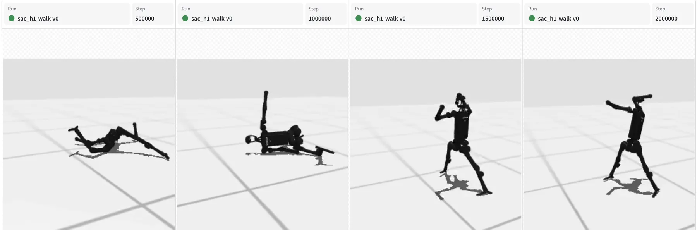

I trained SAC, PPO, TD-MPC2 and DreamerV3 on the Unitree H1 walking task (h1-walk) and compared the results with the paper.

| Algorithm | Obs / action | Seeds | My best | Paper average |
|---|---|---|---|---|
| DreamerV3 | 151D / 61D (paper default) | 1 | 854.2 | 800.2 |
| TD-MPC2 | 51D / 19D | 1 | 805.6 | 782.0 |
| SAC | 51D / 19D | 3 | 575.3 | 31.7 |
| PPO | 51D / 19D | 3 | 14.6 | near zero |
The SAC number that didn't make sense
My SAC run scored about 18 times the paper's. Tracing it back, TD-MPC2, SAC and PPO had run on a simplified environment without hands (51D / 19D), while the paper's default includes hands (151D / 61D). The paper's own figure shows walking return changing several-fold with and without hands, so the gap is task difficulty, not the algorithm. Only DreamerV3 is a like-for-like comparison.
DreamerV3 peaked at 854 against the paper's 800 average, on a single seed, and its return then fell to 233 late in training. I haven't explained that drop yet. The broader ranking matched the paper: model-based methods ahead of model-free, PPO last.
Constraints and next steps
- Colab killed sessions it thought were idle during long subprocess runs; a thread that logs every 30 seconds kept them alive.
- TD-MPC2 crashed when compute quota ran out, with no way to resume, so only seed 0 finished.
- Each algorithm reports reward differently, so I analyze them separately rather than on one chart.
- Next: rerun SAC, PPO and TD-MPC2 with hands (151D) for a fair comparison, and add DreamerV3 seeds to get a mean and variance and find the cause of the late drop.